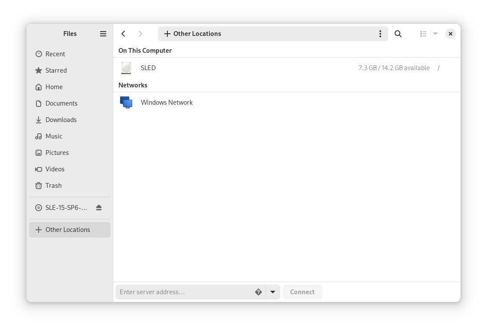

5.3. Accessing network shares
Networking workstations can be set up to share directories. Typically, files and directories are marked to allow users remote access. These are called network shares. If your system is configured to access network shares, you can use your file manager to access these shares and browse them just as easily as if they were located on your local machine. Your level of access to the shared directories (whether read-only or write access, as well) is dependent on the permissions granted to you by the owner of the shares.
To access network shares, open GNOME Files and click Other Locations in the sidebar. GNOME Files displays the servers and networks that you can access. Double-click a server or network to access its shares. You may need to authenticate to the server by providing a user name and password. Common network shares are SFTP-accessible resources (SSH File Transfer Protocol) or Windows shares.

-
Open GNOME Files and click Other Locations in the sidebar. A text box labeled Enter server address... appears at the bottom.
-
Type the server address into the text box.
-
Click Connect.